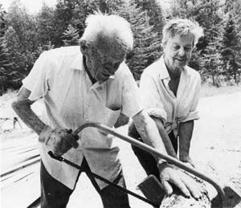
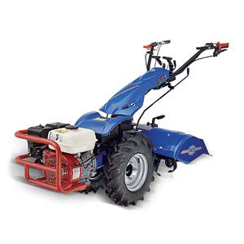
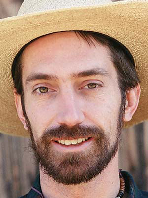
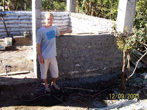

A More Compact Tractor
Cover Wraps: We’re Sorry
Free Border Make Good Neighbors
Pond Memories
Healing Power of Flowers
Earthbags to the Rescue
One Smart Duck
Small Investments Pay Big Dividends
Chickens, Far and Near
Saving Three Ways
Mother in the Second Generation
I enjoyed your article about small tractors, but the prices sure aren’t small (“Discover Versatile Compact Tractors,” April/May 2006). I’ve been looking at two-wheeled tractors made by an Italian company, BCS, and they have some real possibilities for small farmers.
I’ve heard very favorable comments about them from everyone I’ve talked to who has tried one. Most local farm and garden equipment stores don’t have them on the floor, but I found a dealer in my area on the BCS Web site (see below).
Check them out! They seem a lot more appropriate for those of us who don’t need or can’t afford a four-wheeled tractor of any size and haven’t figured out horses or oxen. These two-wheeled tractors are like a rototiller that can mow, chip, plow, bush-hog, scrape, haul or even pull you in a “sulky.” I’ll bet they’re a lot safer on our steep Appalachian hillsides, too. You can call BCS at (800) 543-1040, or visit the Web site, http://www.bcs-america.com.
Later this year we’ll publish an article about two-wheeled tractors. - Mother
I object to the wrapping of the last issue (Issue #215, April/May 2006). While I generally appreciate those covers for the protection they give the magazine, yours was so securely adhered to the binding that I practically destroyed my copy in removing it.
Our apologies to all subscribers. We use the cover wraps several times a year, because your magazines sometimes get damaged in the mail. But in this case, the printer forgot to perforate the wrap so that it could be easily removed. - Mother
Every day, at a corner in the town near our farm, undocumented Latino men gather, hoping to land a day’s work with passing contractors. Not long ago, half a dozen people calling themselves the “Lone Star Minutemen” descended on this corner to protest illegal immigration. These Minutemen appropriated their name from the militia of the American Revolution, who had to be ready to swap plows for muskets in a minute to defend their new country. Those independent small farmers became a cornerstone of the United States’ civic mythology. Indeed, Thomas Jefferson believed them to be both sources and guardians of democracy itself.
Today’s Minutemen want stricter limits on immigration. But that approach would shut out people who come as close as anyone to living Jefferson’s vision. That’s certainly true of some Mexican neighbors of mine - hardworking folks who farm other people’s land, scraping and saving until they can afford a few acres of their own.
My Mexican neighbors, and others like them all over the United States, also are one of the first rays of hope in farm country in many years. Since the Dust Bowl days of the 1930s, many rural counties have been losing people. Between 1990 and 2000, Latino immigrants kept more than 100 rural counties from suffering that fate, according to the U.S. Department of Agriculture. Latinos are also the fastest-growing group among farmers, whose numbers have declined for decades.
The United States can thank its own trade policies for the rising number of immigrant farmers. As heavy U.S. farm subsidies flood Mexican markets with cheap corn, farmers there earn less for their corn. Many have no choice but to seek another job. And many learn the hard way that “free trade” agreements open borders to wealth - freeing it to go wherever it can multiply the quickest - but not to the people impoverished by that process.
Combining an agricultural policy that ruins Mexico’s farmers with immigration laws that keep them from rescuing the United States’ own rural economies makes little sense and less justice. That lack is plain in the modern-day Minutemen’s un-neighborly attitudes, and in the Draconian immigration bill that recently divided the Senate. The bill would put up a new fence along the U.S.-Mexico border, use police and military troops to patrol it and make illegal immigration a felony.
The farming way of life is tough, rewarding and vanishing. I welcome people - any people - who will keep it going, and I want immigration policies that don’t get in their way. The National Immigrant Farming Initiative has an approach I like, investing in immigrant farmers’ contributions to U.S. agriculture with training, translation and the chance to network with other farmers.
Wind the clock back far enough, and we all are newcomers. However different our origins, the same economic winds blew my neighbors and me into the little stretch of country we share. Like it or not, we’re neighbors, and that fact carries certain obligations - of fairness and decency, of neighborliness. We ignore those obligations only at the peril of losing community, democracy and even freedom itself.
Courtesy of The Land Institute’s Prairie Writers Circle
George DeVault’s article “Build a Pond” (April/May 2006) mentioned legendary homesteaders Scott and Helen Nearing and their pond, and it brought back a fond memory. I was walking down a dirt road along the coast of Cape Rosier, Maine, glimpsing the Atlantic through openings in the forest. On the left side of the road was a silhouette of an owl with the words “Forest Farm.” The owl beckoned me, the intrepid adventurer, to walk up that private road. It opened up to fields with a farmhouse and large ricks of organic materials composting on each side of the road.
I saw a woman and asked if this was the Nearing farm. It was Helen, who replied, “Yes, Scott is over there harvesting peas.” I saw his ladder climbing into the pea vines, but Scott was lost high up in the green. He emerged from the vines and took the time to show me his half-acre garden, with the pond placed on the uphill side and a gravity-feed watering system for the garden.
Helen said there was a wrack line of seaweed along the shore and suggested we could bring it up to the farm for composting. While we pitched the wet seaweed into their vehicle, a former military command car, I realized that this 70-year-old man was out-performing his very physical 20-year-old visitor. He had stamina.
A tourist walked by in white summer clothes and said, “Nature’s fertilizer.” Nearing - that is, Dr. Nearing, professor of economics, lifelong activist, co-author with Helen of the definitive The Good Life and other books - replied simply: “Ay - a.” It was pure Maine dialect, completely disguising his distinguished background.
The Nearings’ commitment to simple living and social justice continues through The Good Life Center at their Forest Farm homestead in Maine. You can purchase their classic book,The Good Life. - Mother
Your article “10 Easy and Useful Flowers” (February/March 2006) arrived just in time.
My wife scalded herself with grease from a baking pan, incurring second-degree burns on her forearm and thigh. We rushed her to the clinic, where she was treated. Soon after that, we received the magazine and were immediately drawn to this article. The next day, we drove to our local natural food store and bought a container of calendula salve. She applied the ointment to her wounds, and an amazing thing happened: The scabs disappeared, the pinkish-red skin began to assume its natural color, and she’s healing normally and will soon recover, hopefully without scarring.
We always knew the information you presented was useful and helpful, but we didn’t realize we would use it this way. You have reaffirmed my need to have your magazine in my home regularly. Keep up the good work!
The article “Earthbag Construction” (October/November 2005) could not have come at a better time. I was in Santiago Atitlan, Guatemala, during the mudslides caused by Tropical Storm Stan. The city suffered losses of more than 1,000 people, and the storm left dirt roads buried under 3 to 6 feet of mud. Thousands became homeless and will live for at least a year in plastic-wrap houses provided by the U.S. Agency for International Development.
During this time, I received the article, and it seemed to be the solution to all our problems. All we needed was mud and sturdy bags, and both were readily available. Using funds from the local grassroots hospital, I led a home reconstruction project for a local family. We ended up building the bottom half with earthbags, but finishing with block because of their concerns - this was the first earthbag house built in the region.
I met with the mayor and other officials about the potential for more. Since my return to the States, a larger building has been started for an association of weaving women in the refugee camp.
Using local resources, we were able to build a cheaper, stronger and more earth-friendly house, with more to come! Thanks again Mother!
I am a duck enthusiast and have had different breeds, but none have compared in temperament, intelligence and quality with Blackie, a little Muscovy female I had for more than 13 years. She was so tame, she allowed me to pick her up and carry her around. A natural communicator - when she wanted to attract my attention, she would stand in front of me, make eye contact and bob her head up and down. One time, she found me in the yard and bobbed until I followed her to the barn. She wanted me to help her companion, a lame duck, get outside, as he had trouble getting over a step. After I lifted the duck outside, Blackie bobbed her head up and down as though to thank me, then went off with the lame duck.
Not long ago, I went into the barn and found her there not moving. It was her time to go home. I wept over that tremendous loss. I truly loved that little duck. From my experience with Blackie, I learned that ducks can become excellent communicators with people and are able to make independent decisions based on circumstances. I will miss her.
Barbara Kingsolver’s story concerning Heifer International was so wonderful (“Changing the World One Chicken at a Time,” December/January 2006). After reading it, I was so glad that our family had decided to contribute to this organization. We are not a wealthy family by any North American standard. However, this year we could afford to buy enough shares ($10 per share) to provide a goat to a distant family, who received it as a Christmas present. Heifer provided a wonderful card for us to send explaining the gift. There are so many people whose needs are very basic, and a little can go a long way. Thanks to this article, I have an even greater understanding of how our gift to Heifer International truly will benefit others.
“Changing the World One Chicken at a Time” was very interesting and exciting. At a time when we are being called “ugly Americans” in some parts of the world, this puts an entirely different face on the people of the United States. The expert support provided by Heifer International on crops and animal husbandry makes this a very sustainable program.
We are so fortunate in this country. Programs like these give us a chance to share our blessings. I can only imagine the pleasure in personally giving an animal that would enhance and sustain another’s life. Since we can’t be there, we will support the programs that do it for us.
This letter could have been longer; I could have commented at length about the article on free-range eggs (August/September 2005). We have 13 hens that give us wonderful free-range eggs, and the comparison chart was a real eye-opener.
Mother - you do good work.
I recently subscribed to Mother Earth News using your Earth-friendly online subscription service. What a bargain! Each month I get wonderful articles and energy-saving tips that have already helped me save money. Plus, I’ve discovered that the last few issues have contained a “Save $1” coupon for my favorite brand of cat litter. Not only is Mother an entertaining and educational publication, but it’s turning out to be a wise investment, too. Thanks so much, and keep up the great work.
A lot of folks know me as having “been dere, done dat,” as I gathered my youngsters and headed into high adventures in 1976. We felled, peeled and notched huge trees to construct a 16-by-36 cabin. We occupied it for three years with no amenities. Our first winter, temperatures dipped to 54 below zero and stayed well below zero for months. My youngest child now has children and, after years in a metropolitan lifestyle, they’re buying into a collective. What we did, 30 years ago, now lures professionals, seeking a healthier way to live and raise children.
This is anecdotal evidence that, in my case at least, Mother Earth News isn’t a luxury - it’s a necessity. I’m retired and on Social Security now, but this new generation is increasingly asking how they can do what we’ve done, in a different time and place. I tell them - first thing - to go online, find Mother Earth News, get their own subscription and do the research. I urge them to visit their county Extension office as well, especially if they’re on a tight budget. Then find a location that feels like “coming home,” and do what they must to live there. If they can’t move immediately, I urge them to set that as an ultimate goal.
Many have done that; more are doing it. I’m living proof that you don’t need huge financial backing to achieve a dream, you only need to own your dreams and diligently pursue them with what you have in your pocket of resources.
Subscriptions and Customer Care
|
 GLYNNE ROBINSON BETTS/CHELSEA GREEN PUB. Scott and Helen Nearing sawing wood at their Maine homestead in 1980. |
 BCS-AMERICA Two-wheeled tractor from BCS-America. |
 Prairie Writers Circle Wylie Harris |
|
 JARED STOLTZFUS Earthbag building in Guatemala |
|
|